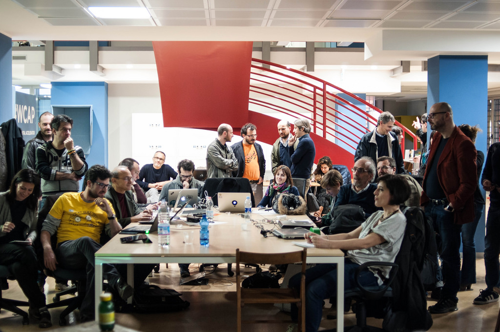
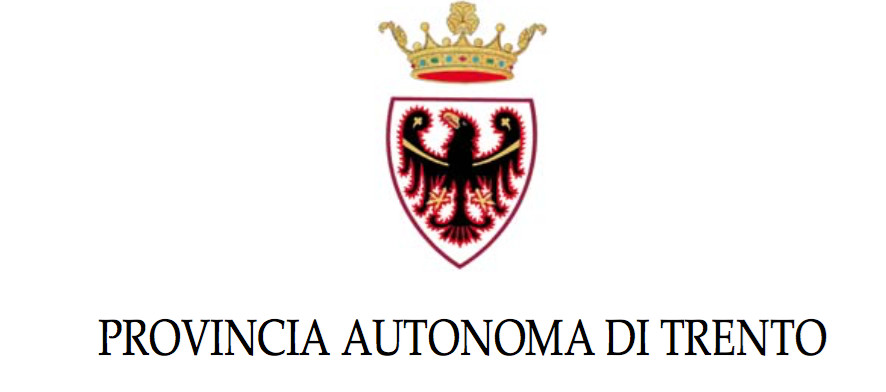
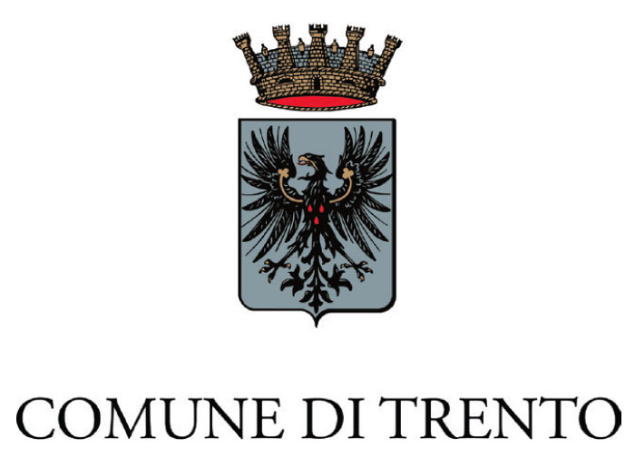
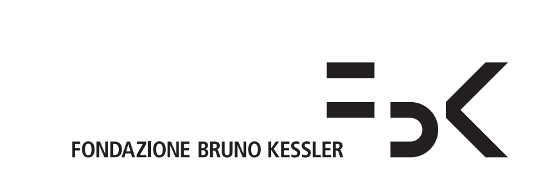
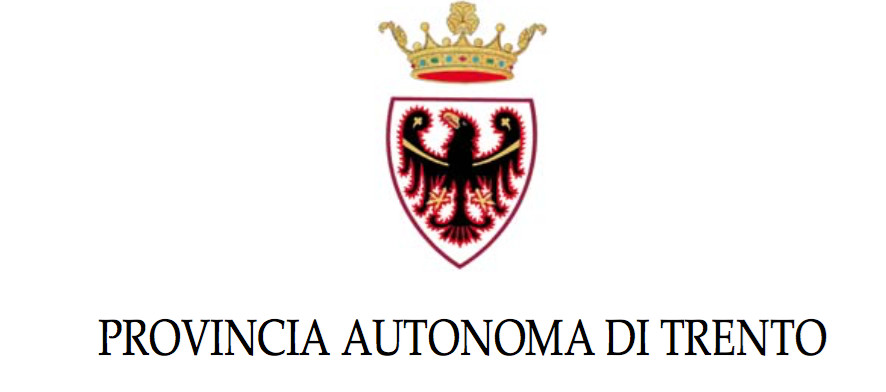
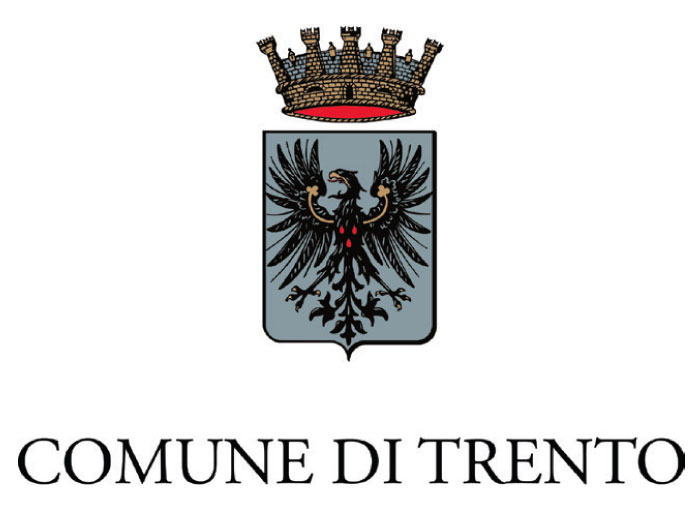
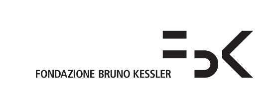

Il quarto raduno di Spaghetti Open Data si chiama SOD16 e si tiene a Trento il 6, 7 e 8 maggio 2016.
Se hai a cuore il tema dei dati aperti, e se ti senti almeno un po' civic hacker è il posto giusto per te, chiunque tu sia e qualunque cosa tu sappia o non sappia fare. Su Spaghetti Open Data ci sono sviluppatori, giornaliste, funzionari pubblici, ricercatrici, giuristi, attiviste, studenti e un bel po' di semplici curiosi di tutti i sessi e tutte le età. Assolutamente chiunque sia interessato agli open data è benvenuto.
Come per gli altri raduni SOD, anche il programma di SOD16 è stato costruito dalla comunità.
Qualche link utile se sei arrivato direttamente in questa pagina e non capisci qualcosa:
- se vuoi maggiori informazioni su come partecipare, vai a questa pagina: Come iscriversi e come partecipare a SOD16;
- se vuoi collaborare e confrontarti sugli Open Data e sulle sessioni proposte, leggi qui, e iscriviti alla mailing list di Spaghetti Open Data, che è il principale luogo di discussione sul raduno SOD16, oltre che il principale luogo di discussione sul tema Open Data in lingua italiana;
- se cerchi informazioni logistiche (luoghi principali dell'evento, dove dormire e informazioni generali su come arrivare a Trento), le trovi in questa pagina: "SOD16: informazioni pratiche".
Il programma dell'evento #SOD16

   
   
Questo è il programma del raduno di Spaghetti OpenData 2016 che si terrà a Trento il 6,7 e 8 maggio 2016.
Come per gli altri raduni SOD, anche il programma di SOD16 è stato costruito dalla comunità.
Qualche link utile se sei arrivato direttamente in questa pagina e non capisci qualcosa:
- se vuoi maggiori informazioni su come partecipare, vai a questa pagina: Come iscriversi e come partecipare a SOD16;
- se vuoi collaborare e confrontarti sugli Open Data e sulle sessioni proposte, leggi qui, e iscriviti alla mailing list di Spaghetti Open Data, che è il principale luogo di discussione sul raduno SOD16, oltre che il principale luogo di discussione sul tema Open Data in lingua italiana;
- se cerchi informazioni logistiche (luoghi principali dell'evento, dove dormire e informazioni generali su come arrivare a Trento), le trovi in questa pagina: "SOD16: informazioni pratiche".
6 Maggio 2016 - (Un)Conferenza - Prima giornata del raduno
Dove saremo: Consorzio dei Comuni del Trentino (Via Torre Verde 23)
Mattinata (dalle 9.30) - Sala De Gasperi - piano -1
- 09.30 - Arrivo e registrazione al desk
-
10.00 - Saluti iniziali ed apertura lavori
- Saluti alla comunità - Maurizio Napolitano (FBK)
- Saluti dal gruppo Open Data Trentino - Francesca Gleria (Provincia Autonoma di Trento)
- Benvenuto dal Consorzio dei Comuni - Alessandro Ceschi - Direttore del Consorzio dei Comuni
- 10:20 - Wendy Carrara - “European Open Data Portal” - http://www.europeandataportal.eu/ (l'intervento sarà in inglese)
- 11:00 - Questions & Answers con Wendy, moderato da Francesca De Chiara
- 11:15 - Ricerca Open Data 200: lo stato dell'arte del riuso degli Open Data dalle aziende in Italia - Francesca De Chiara - http://www.opendata500.com/it/
- 11:30 - Questions & Answers su OD200
- 11:40 - Open Demanio - Massimo Savelli (Servizio Tecnologie ICT - Innovazione - Agenzia del Demanio) - http://dati.agenziademanio.it/#/
- 12:00 - FOIA: a che punto siamo? - Ernesto Belisario e Monica Palmirani - http://www.foia4italy.it/
- 12:30 - Chiusura dei lavori e pranzo collettivo (ognuno porta qualcosa, come nel 2015: segna in questa discussione cosa vuoi portare, grazie! Questo è il menù)
Pomeriggio (dalle 14:30) - Primo piano e piano terra
Qui ci sono le sessioni di (Un)Conference: scegli a quali partecipare (devi essere registrato al sito per iscriverti alle singole sessioni) e ci darai una mano alla logistica delle sale!
Nota: ci sarà una pausa caffè dalle 16.30 alle 17.00.
|
Sala Emiciclo (40 posti) Primo piano, in fondo al corridoio a sinistra |
Sala Pranzo (30 posti) Piano terra, dove abbiamo mangiato |
Sala Segreteria (20 posti) Primo piano, subito a dx |
Sala Riunioni (18 posti) Primo piano, in fondo al corridoio a dx |
|
|---|---|---|---|---|
|
14:30 - 15:30 |
Core Vocabularies (Nicola Guarino) | EnergyMapping - prima parte (Piergiorgio Cipriano, Patrizia Saggini) | Confiscati Bene 2 anni dopo (Andrea Nelson Mauro) |
Bando POR Fesr di Regione Veneto (Gigi Cogo) |
| 15:30 - 16:30 | Standard per i dati aperti - che fare? (Marco Brandizi) | EnergyMapping - seconda parte (Francesca Lussu, Umberto Di Staso, Marco Combetto) | OpenMove - dagli OD del trasporto pubblico al mobile ticketing (Lorenzo Modena) | OpenHistoryMap (Marco Montanari) |
|
16:30 - 17:00 |
Pausa caffè |
|||
| 17:00 - 18:00 | InPolitiX, bridging the gap between citizens and politicians (Donato De Ieso) | H2OpenMap - portiamo l'acqua sulle mappe e dove serve (Francesco Giunta) | Il futuro di SOD: chi siamo? |
I muri d'Europa raccontati dai numeri (Matteo Moretti) |
Serata
20:00 Cena sociale: ricordati di prenotarti il posto!
7 Maggio 2016 - Civic Hackathon(s) - Seconda giornata del raduno
Dove saremo: Biblioteca Comunale di Trento (Via Roma 55)
Orari: 9.30 -18:00
Puoi scegliere tra 6 sessioni per i Civic Hackathon(s): tranne per quella su Wikidata in Sala Manzoni, che dura 60 minuti, le altre sono parallele, e durano tutta la giornata: ISCRIVETEVI!
- 9.45 - Sala degli Affreschi - Ritrovo tutti assieme per presentare al volo le sessioni e dividerci in gruppi: ci sarà anche un CoderDojo sui dati (DataDojo), che si terrà alla Palazzina Liberty in Piazza Dante
|
Sala A (30 posti) Primo terra |
Sala B (30 posti) Piano terra |
Sala C (25 posti) Primo piano |
Sala Manzoni (15 posti) Soppalco |
Sala degli Affreschi - lato A (25 posti) Primo piano |
Sala degli Affreschi - lato B (25 posti) Primo piano |
|
|---|---|---|---|---|---|---|
| 10:15 - 13:00 |
Back to the Death Star: una nuova esplorazione della rete dei beneficiari dei fondi di ricerca europei |
Beni Comuni Digitali - Definizioni e Buone Pratiche (Cristiano Longo) |
Code4Health: OpenData e salute (Matteo Brunati) |
Wikidata, la banca di conoscenza libera in casa Wikimedia (Marco Fossati) - sessione da 60 minuti |
Tool per valutare un CKAN/DKAN (Marco Montanari) |
Open Discussion su Sports Open Data API Restfulness (Sports Open Data) |
| 13:00 - 14:30 |
Pausa pranzo (dove si desidera, visto che siamo in centro: c'è comunque un bar interno alla biblioteca) |
|||||
| 14:30 - 15:30 | Italian Open Data City Census Sprint - un'ora per aggiornare i dati del City Census tutti assieme, nella Sala degli Affreschi | |||||
| 15:30 - 17:30 |
Back to the Death Star: una nuova esplorazione della rete dei beneficiari dei fondi di ricerca europei |
Beni Comuni Digitali - Definizioni e Buone Pratiche (Cristiano Longo) |
Code4Health: OpenData e salute (Matteo Brunati) |
Tool per valutare un CKAN/DKAN (Marco Montanari) |
Open Discussion su Sports Open Data API Restfulness (Sports Open Data) |
|
- 17.30 - Sala Affreschi - Ritrovo nella Sala Affreschi per una veloce presentazione del lavoro fatto e chiudere la giornata.
Serata
20:00 - Cena sociale: ricordati di prenotarti il posto!
8 Maggio 2016 - FormAzione - Terza giornata del raduno
Dove saremo: uffici di SpazioDati (Via Adriano Olivetti,13, quarto piano)
Orari: 10.00 - 13:00 e eventualmente una ripresa dopo pranzo, a seconda dei desideri dei presenti
Dove ci troviamo: alle 10 al bar del Muse
Ci sono 4 sessioni di formazione a cui è possibile iscriversi - "FormAzione": sono sessioni parallele, iscrivetevi ad una sola di queste, grazie!
- Telegram per il riuso degli openData (Piersoft)
- Introduzione al trattamento e analisi dei geodati con R (Andrea Zedda e Michele Ferretti)
- Strutturazione dei dati e pubblicazione: usiamo i dati di ComunWeb (Marco Combetto, Gabriele Francescotto, Francesca Gleria)
- LOD, SPARQL e dintorni: un piccolo how-to (Nicola Vitucci)
Dove mangiare a pranzo: appena fuori dagli uffici, oltre il parco, c'è il Food Truck Weekend dove si potrebbe andare a mangiare! Ma possiamo decidere cosa fare in quel momento (è un'iniziativa all'interno dell'Impact Hub di Trento)
E alla fine, ci si saluta!
Il raduno SOD16 termina. Si chiude dopo pranzo, attorno alle 15.30: consideratelo un orario molto variabile, a seconda di quello che desiderano fare quelli che sono rimasti :)